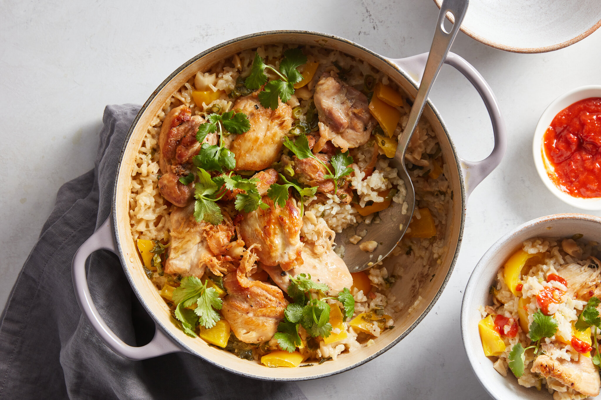

Chicken and Rice Casserole

Description
A one-pot chicken dish with coconut rice mixed with ginger, farlic, cashews and scallion. Chicken thighs add a nice touch of protein and cilantro brightens the dish with a nice hot sauce.
Ingredients
- 1.5 lbs boneless, skinless chicken thighs
- Quarter cup nuetral oil
- 2 teaspoons salt
- Half teaspoon black pepper
- 2 tablespoons minced fresh ginger
- 1 Tablespoon minced garlic
- 1.5 cups short-grain rice
- 1.75 cips chicken broth
- 1 can coconut milk
- 1 yellow bell-pepper
- Half cup roasted cashews
- 3 scallions
- 2 tablespoons cilantro
- hot sauce
Steps
- Heat oven to 375 degrees
- Rub chicken with a tablespoon of oil and season with a teaspoon of salt and a quarter teaspoon of pepper
- Heat 2 tablespoons of the oil over medium heat
- Brown chickebn, turning halfway until no longer pink. Transfer to plate
- Add the remaining oil, ginger and garlic to empty pot and stir for 30 seconds
- Add rice and stir until evenly coated in the oil
- Add broth, coconut milk, bell pepper, cashews , scallions and the remaining salt and pepper. Then stir
- Bake until liquid is absorbed, rice is tender and chicken is cooked (about 25 mintues). Spread cilantro.
Back